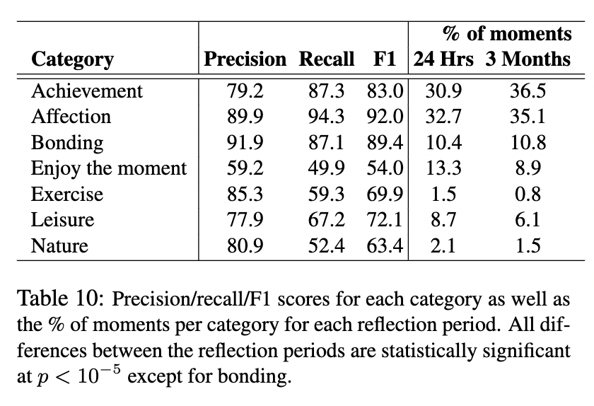

Natural Language Processing projects requiring supervised learning often face the challenge of obtaining sufficient, high-quality labeled data. In recent years, a variety of new data-centric methodologies have emerged to address various tasks within the standard supervised learning workflow. In this presentation we’ll cover this new set of tools by working through an example project, illustrating how new methods can help practitioners do more with their data. We’ll cover topics like sentence embeddings, submodular sampling, creating better annotation experiences, using inter-annotator agreement, few-shot learning, and confident learning – illustrating how these methods can improve the process of collecting high quality data.
Introduction
Natural Language Processing (NLP) projects often depend on the availability and quality of labeled data for supervised learning. Recently, the data-centric AI movement (Brown 2022) has emerged as a guiding philosophy for projects, which has driven the development new methods that address various tasks within the standard supervised learning workflow. This document aims to provide an overview of these new tools by working through an example project, illustrating how these methods can help practitioners improve their data collection process.
The primary goal is to illustrate a set of tools that and how they might work together in an NLP project. Though these methods are presented in the context of a “project”, depending on your context you may not use every method for every project. I will not be diving deep into the math or history of any method, but I will give general context on each one.
The success of applied NLP projects often depends on understanding the available tools and developing skill in connecting them together. In applied projects, it’s often best to iterate quickly by finding out what doesn’t work, understanding the constraints of your problem area, and making changes based on that information. Often applied projects don’t have perfect data, use state-of-the-art models, and there is a lack of labeled data. The tools presented here will help address these points.
Case Study
To help illustrate, we’ll be working through an example project using HappyDB (Asai et al. 2018) as an example dataset. HappyDB is “a collection of happy moments described by individuals experiencing those moments.” It was collected via crowd-sourcing on Amazon Mechanical Turk, where each worker was presented with the following task:
What made you happy today? Reflect on the past 24 hours, and recall three actual events that happened to you that made you happy. Write down your happy moment in a complete sentence. (Write three such moments.)
In this instance, 24 hours is the reflection period, and data for longer reflection periods is available.
In the paper describing HappyDB, the authors perform several language related tasks on the corpus. For our purpose, we’ll focus on the classification task they describe and use it as a comparison throughout the process.
We developed a multi-class classifier using Logistic Regression with a bag of words representation of happy moments as features. To obtain training data, we crowd sourced a batch of 15,000 happy moments to obtain category labels. Every happy moment was shown to 5 workers, and we only considered labels that at least 3 workers agreed on. Table 10 shows the performance of our classifier using a 5-fold cross-validation setup. 1

Performance measures from the HappyDB paper - Table 10
Dataset Introduction
We’ll start by familiarizing ourselves with this dataset. The text of a happy moment is contained in the cleaned_hm column, and the original classification in the ground_truth_category columns. While the authors provide over 100,000 examples in their dataset, we will filter the dataset down to only those that were originally annotated by a human.
Code
import pandas as pdfrom IPython.display import display, Markdowndtype = {"hmid": int,"wid": int,"cleaned_hm": str,"reflection_period": "category","ground_truth_category": "category",# "predicted_category": "category", # We don't use this}df = pd.read_csv("data/cleaned_hm.csv", dtype=dtype, usecols=dtype.keys())df_annotated = df[df["ground_truth_category"].notnull()].copy()display(df_annotated.head())
Table 1: The first five rows of the HappyDB Dataset
hmid
wid
reflection_period
cleaned_hm
ground_truth_category
3
27676
206
24h
We had a serious talk with some friends of our...
bonding
5
27678
45
24h
I meditated last night.
leisure
24
27697
498
24h
My grandmother start to walk from the bed afte...
affection
32
27705
5732
24h
I picked my daughter up from the airport and w...
bonding
42
27715
2272
24h
when i received flowers from my best friend
bonding
Next we’ll view the distribution of labels for this datsaset.
We’ll come back to the labels later. For now, let’s assume we’re starting a new project and we don’t have any labeled data. The first thing we would want to do with this dataset is some exploratory data analysis (EDA).
Embedding Text
An common EDA process with text data is to split up the text by word (tokenization), remove common words that provide low-information (stopwords), count those words, and review the most common words. That process works for getting aggregate information about your dataset at the word-level, but doesn’t provide any document-specific information about our texts. Instead of doing that process, we’re going to take a document-first approach and embed each of our texts.
We we embed a piece of text, we transform it into a fixed-size numerical vector that’s a representation of that text - and that representation is called an embedding. These embeddings capture semantic information about the text and enable us to do interesting comparisons between texts. Metaphorically we think of embeddings as assigning an address to each thing you’re embedding, such that things that are similar will have addresses next to each other.
Semantically meaningful embeddings were popoularized first at the word-level with the word2vec algorithm (Mikolov et al. 2013). As an exmaple of the semantic information captured by word embeddings, it was found that they can be used to solve word analogy tasks like King – Man + Woman = Queen.
Since the invention of word embeddings, the approach to generating document-level embeddings have been developed. Initially, we would use pre-trained word embeddings such as Word2Vec, GloVe, or FastText and average the embeddings of each word in a piece of text to create a document embedding. There was also an approach called doc2vec which created document-specific embeddings while training a model similar to word2vec. When transformers based models like BERT were originally created, similar approaches to averaging embeddings were used - though now the word embeddings were contextual and existed as a byproduct of the task those models were trained on. Today we have a set of pre-trained models trained specifically to generate useful embeddings based on sentence similarity tasks.
For our use case, we’ll use one of those pre-trained sentence embedding models from the sentence-transformers python library.
The amount of preprocessing you want to do will depend on your data, but it is important to make sure it’s consistent. For this case, we’ll simply lowercase all of the texts. One thing you do not want to do is remove stopwords or lemmatize. When using pre-trained models, you want your texts to be as close as possible to the training data used for those models.
Table 3: Similarity values of sentence-embedding pairs
sim
sentence1
sentence2
85
0.48
I slow cooked a chuck roast on my stove that c...
i finally learned to cook chicken
61
0.37
I went shopping
I bought a new TV
51
0.36
when i received flowers from my best friend
The phone that I have ordered in a local onlin...
Dimensionality Reduction
Dimensionality reduction allows us to project the embeddings down to a reasonable number of dimensions so we can visualize the data and avoid the curse of dimensionality. The goal of dimensionality reduction is to produce a lower-dimensionality representation of high dimensionality data, while retaining both global and local structure of the data. We’ll be using TSNE (t-distributed stochastic neighbor embedding) as our dimensionality reduction algorithm. 2
In the Figure 1 figure below, we display a scatterplot of our embedded texts after they have been run through TSNE.
Code
from openTSNE import TSNEimport plotly.express as pxtsne = TSNE( perplexity=30, metric="cosine", n_jobs=8, random_state=42, verbose=False,)projection = tsne.fit(embeddings)df_annotated["c1"] = projection[:, 0]df_annotated["c2"] = projection[:, 1]fig = px.scatter( df_annotated, x="c1", y="c2", hover_data=["cleaned_hm", ], opacity=0.5, render_mode="webgl", title="Embeddings of Happy Moments after TSNE",)fig.show()
Figure 1: A plot of HappyDB text embeddings run through TSNE with the cosine similarity metric
Submodular Selection
How do we understand this dataset and the diversity contained within it? How would we select a dataset for training a model? If we randomly sample, we’re beholden to the distribution of examples that exists in the training data: maybe 80% of the data is from a single topic, and 20% is from scattered topics. If we wanted to summarize the diversity of topics within the data, a random sample wouldn’t work.
Submodular sampling (optimization) is a way around this. We’ll use the apricot package which is self-described as a tool for the purpose of “summarizing massive data sets into minimally redundant subsets that are still representative of the original data.”
We’re going to use an algorithm called Facility Location and there’s some intuition behind this name. Let’s say we’re a restaurant owner and a city has given us permission to place 5 restaurant locations around the city. We would want to place them in a way that we’re able to serve the most customers without being redundant with our locations (assuming customers will always prefer to the nearest location and our locations have infinite capacity). If we know the locations of our customers, the Facility Location algorithm will give us an optimal placement of restaurants that reduces redundancy and maximizes the coverage of possible customers of our restaurants.
One important note is that it’s usually easier and more computationally efficient to run submodular sampling on lower-dimensional data. We’ll be running this algorithm on the output of t-SNE and not the full 382-dimension embeddings.
Code
from apricot import FacilityLocationSelectionn_selected =100fs = FacilityLocationSelection(n_selected, random_state=42, verbose=False)selected = fs.fit_transform(projection)selected_ix = fs.ranking# Here we have to reset the index because fs.ranking# gives us the array index of the inputs, not the index# from our DataFramedf_annotated["selected"] = df_annotated.reset_index().index.isin(selected_ix)assert df_annotated["selected"].sum() == n_selected# We're going to export the submodular sample to annotate separatelydf_annotated.query("selected").to_csv(f"data/submodular-sample-{n_selected}.csv")fig = px.scatter( df_annotated, x="c1", y="c2", color="selected", render_mode="webgl", title="Embeddings of Happy Moments after TSNE, Submodular Selected Observations",)fig = fig.update_traces( patch={"opacity": 0.1}, selector={"name": "False"}, overwrite=True,)fig = fig.update_traces( patch={"marker": {"size": 12, "line": {"width": 1}}}, selector={"name": "True"}, overwrite=True,)# We won't show the hover tooltip on this one, it saves some space in the outputfig.update_traces(hoverinfo="skip", hovertemplate=None)fig.show()
Figure 2: A plot of HappyDB text embeddings with 100 examples selected with submodular sampling
User-Friendly Annotation Processes
Sorting
Imagine we are starting with this dataset and we want to annotate it into one of the six categories from the paper: achievement, affection, bonding, enjoy the moment, exercise, leisure, nature. We now need to think about the experience of those doing the annotation as well as their efficiency.
One easy efficiency gain would be to group the examples by similarity, so that an annotator isn’t jumping from topic to topic as they go through the examples. We can do with with TSNE by projecting down to one dimension and sorting on that dimension.
Table 4: First 5 and Last 5 Sorted Dimension Reduced Embeddings
(a) First 5
projection_1d
cleaned_hm
44634
-12.901710
The happiest movement is change to person to p...
37443
-12.186383
Iave certainly found this to be true in my own...
36122
-10.867044
My girlfriend gave me a jar of love notes and ...
38634
-10.701071
My youngest sister announced her engagement, a...
97321
-10.479425
A girl I like texted me back when I assumed sh...
(b) Last 5
projection_1d
cleaned_hm
11430
11.278650
I reviewed new ways to increase my income and ...
39339
11.730833
A mTurk requester gave me a $1 bonus for my fe...
86626
11.835034
An event that made me happy was paying off one...
65276
11.890185
Getting paid on time to pay the electric right...
31590
12.251334
I was able to be approved for a gastric bypass...
Correction & Label Ordering
When annotating data, it’s important to consider how the task is presented and framed to the annotator. One way to make annotation more efficient is to reframe the task as correction-oriented process rather than a “blank slate” decision-making process. With binary tasks, this can involve presenting the annotator with a pre-made decision and asking for their approval or correction. For tasks multi-class/choice tasks, the strategy can be refined further. Instead of having the annotator choose from a fixed, consistently ordered list of labels, the set of of label options can be dynamically sorted and narrowed down to a subset of most relevant labels.
As an example, we took a similar approach for labeling offense descriptions from criminal justice data systems into one of 75 categories. In our approach, we initially present the annotator with the top 5 categories as predicted by a machine learning model, ordered by predicted probability. In 80% of instances, annotators selected one of these top 5 predicted categories. If a text can’t be assigned one of the 5 categories presented, it gets funneled into a dataset to be labeled with the full set of labels. This two-stage process streamlines the annotation process and enhances its efficiency.
There are a few ways to do this correction and label ordering task in practice:
Unsupervised - Create embeddings for all of your labels. For each input text, find the similarity between that input and each of your labels. Sort the labels by similarity.
Supervised - If you have already trained a model on data, use the predictions from that model to pre-select an option for classificatoin.
Weakly Supervised / Rules-Based - Use a set of rules to define how an example should be labeled a priori.
LLMs - Use a LLM to make an initial label decision or ordering (see Prodigy OpenAI recipes)
TODO
Illustrate this point by detailing how it would be applied to our dataset.
Multiple Annotators / Inter-Annotator Agreement
Employing multiple annotators is a great way to get feedback on your annotation task and prevent downstream issues with an underspecified task.
Having multiple annotators provides varied perspectives on your annotation task. Having several annotators working in parallel provides an opportunity to identify areas of ambiguity or confusion in the labels, which can then be addressed proactively. This process leads to more precise and detailed labels, enhancing the performance of the supervised learning models trained on this data.
The use of multiple annotators also allows for the calculation of inter-annotator agreement measures, which can provide crucial insights into the quality of the annotation process and can be predcitive of machine learning model performance. High inter-annotator agreement suggests clear, well-defined labels and instructions, while low agreement may signal the need for further refinement of the annotation guidelines or training.
Many projects and datasets do employ multiple annotators, but do not provide individual annotator decisions (including HappyDB). Including such data when available can add an additional layer of transparency and accountability to the annotation process, and it also makes your data avaialable to be used in newer models that incorporate multiple annotations.
TODO
Either illustrate this example by calculating agreement with a new annotator (an LLM), or explain in more detail how we would use this for our case study.
Few Shot Learning w/ SetFit
Ideal scenario: you have a bunch of training data - thousands of examples! At least 100 per category! You’ve got a state-of-the-art Transformer model ready to run on your GPU server cluster and you’re ready to get 100% accuracy!
We’re almost never in the idea scenario. What about models for little data? What about the scenario where we don’t have a GPU?
SetFit is a Few-Shot machine learning methodology (Tunstall et al. 2022) that takes advantage of existing embedding models from sentence-transformers that works well in situations with small amounts of training data.
To understand how SetFit works, we need to first understand a bit about the training data and the loss function used for embedding models. These models are trained on pairs of sentences where the “target” value is the similarity between the two sentences.3
We can convert any single-text classification task into a paired classification task with some clever pre-processing: simply randomly sample pairs of sentences from a training dataset, and if they have the same category assign them to have a similarity of 1, and assign them a similarity of 0 if they’re from different classes.
After you do this process to get a paired similarity dataset, you can fine-tune any existing embeddings. I like to imagine this process as “stretching out” the embedding space so that texts from different labels will now be further apart.
Once you fine-tune your embeddings, you can then use those new embeddings as features and put any exising classification model, like logistic regression on top of that. This is usually called the ‘head’ of the model.4
SetFit Performance on Customer Reviews (Sentiment)
Let’s imagine our annotation campaign is over and we have our full, annotated dataset. It’s likely we made some mistakes annotating along the way. Confident learning (Northcutt, Jiang, and Chuang 2021) presents an approach to identify potential label errors in datasets. The cleanlab package provides several tools for doing this process.
In order to do confident learning you need two things: a labeled dataset and a predictive model to generate out-of-sample predicted probabilities for each example. Typically this is done similar to cross-validation where you train on one set of your data and predict on another. We’ll do 5-fold cross validation.
It will be helpful to have a model that can train quickly, since we have to train 5 instances of it. We’ll choose a FastText model, which uses word and sub-word embeddings, and then use the average of a documents word embeddings as a document’s feature set to classify thsoe documents (Joulin et al. 2016).5
TODO
Discuss various issues that labels can have: ontological (subset/labels not mutually exclusive), multilabel (multiple labels in an example), normal annotation errors.
Table 8: Sample of Texts with Possible Label Errors
cleaned_hm
ground_truth_category
8472
Two weeks ago my friend referred my work services (audio engineer) to a friend of hi...
achievement
11182
I prepared a nice meal for my girlfriend and she liked it.
achievement
9746
One of my friends opened a business.
achievement
1028
my family members are going to exhibition very enjoyed .that movement with my kids.
enjoy_the_moment
11823
My friend passed Degree exam
achievement
13732
I took my dog outside and played fetch with him.
leisure
4240
I got engaged to my girlfriend.
achievement
10276
My friend got an award for acting
achievement
3826
My daughter learnt to ride her bicycle
achievement
1094
I played some counterstrike with some friends online
leisure
7908
I went jogging with a friend.
exercise
4488
I bought a kitten
affection
6772
I finally completed 70 push-ups and 100 squat-ups.
exercise
8833
My daughter started to pedal herself on her tricycle.
achievement
13087
I felt successful at work.
enjoy_the_moment
Now that we have identified observations with label issues, we have a prioritized list of examples to review that we can relabel and get an improved model
Conclusion
TODO
Summarize and wrap up
References
Asai, Akari, Sara Evensen, Behzad Golshan, Alon Halevy, Vivian Li, Andrei Lopatenko, Daniela Stepanov, Yoshihiko Suhara, Wang-Chiew Tan, and Yinzhan Xu. 2018. “HappyDB: A Corpus of 100,000 Crowdsourced Happy Moments.” In Proceedings of LREC 2018. Miyazaki, Japan: European Language Resources Association (ELRA).
Brown, Sara. 2022. “Why It’s Time for ’Data-Centric Artificial Intelligence’.”MIT Sloan. https://mitsloan.mit.edu/ideas-made-to-matter/why-its-time-data-centric-artificial-intelligence.
Joulin, Armand, Edouard Grave, Piotr Bojanowski, and Tomas Mikolov. 2016. “Bag of Tricks for Efficient Text Classification.”https://arxiv.org/abs/1607.01759.
Mikolov, Tomas, Ilya Sutskever, Kai Chen, Greg Corrado, and Jeffrey Dean. 2013. “Distributed Representations of Words and Phrases and Their Compositionality.”https://arxiv.org/abs/1310.4546.
Northcutt, Curtis G., Lu Jiang, and Isaac L. Chuang. 2021. “Confident Learning: Estimating Uncertainty in Dataset Labels.”Journal of Artificial Intelligence Research (JAIR) 70: 1373–1411.
Tunstall, Lewis, Nils Reimers, Unso Eun Seo Jo, Luke Bates, Daniel Korat, Moshe Wasserblat, and Oren Pereg. 2022. “Efficient Few-Shot Learning Without Prompts.” arXiv. https://doi.org/10.48550/ARXIV.2209.11055.
Footnotes
The HappyDB paper was released January 2018. The “Transformers revolution” didn’t start until October 2018 when the BERT paper was published. However, this paper was released when methods like word embeddings were available, so it’s unclear why they only apply the bag-of-words approach to classification.↩︎
UMAP: Uniform Manifold Approximation and Projection is another popular dimensionality reduction tool.↩︎
A terminology note: doing this process without fine-tuning the embeddings is often called ‘linear probe’ in the literature. This is also a good baseline approach if you do not want to fine-tune.↩︎
FastText is also a good baseline choice and is particularly effective if your texts have inconsistency in spelling.↩︎
![]()